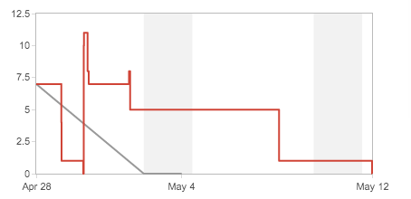

Overleveringsmøte
12. mai 2014
- Orientering om siste sprint
- Demonstrasjon av løsningen
- Tilgjengeliggjøring av produktet
- Akseptansetest, kriterier og brukerscenarier
Sprint 3 - Overordnet
Som prosjektets siste sprint har Sprint 3 vært et "oppsamlingsheat" der en god del nye issues har blitt lagt inn etterhvert. Dette gjør at grafer/burndown charts ikke er særlig informative.
Hovedfokuset har vært på ferdigstilling av det grafiske uttrykket, end-to-end-testing samt forbedring av feilmeldinger. Vi har også forberedt overlevering ved å sette opp en egen server-instans på Heroku som bruker de spørsmålene som NOV har lagt inn.
Visuelle endringer
- Safen er gjort enklere, blant annet ved å fjerne skyggen, samt at fargene er endret for å gjøre alternativene mer synlige.
- For små skjermer (ned til iPhone5) er uttrykket vesentlig forenklet, blant annet ved å fjerne Derrick.
- Snakkeboblen vil nå endre størrelse ut i fra hvor langt tekstinnholdet er, på alle skjermer. Videre er den plassert over safen på små skjermer.
- På små skjermer er "Forrige" og "Neste" byttet ut med piler nederst i skjermbildet.
- Registreringssidene har fått tekstlige og visuelle forbedringer/forenklinger.
Sprint 3
Kode og teknisk dokumentasjon
Kode og teknisk dokumentasjon er tilgjengelig som et Git-repository på GitHub: https://github.com/developer-sor/virtuellsafe.
Dersom NOV ønsker å overføre koden til sine interne Git-servere, eller ønsker tilgang til koden på Github, kan dette ordnes ved å kontakte Narve eller Harvey.
Hosting
-
Kode (Heroku):
- http://knowit-vib-staging.herokuapp.com
- http://knowit-vib.herokuapp.com
-
Data (Mongolab):
- mongodb://ds037647.mongolab.com:37647/vsafe-dev
- mongodb://ds039447.mongolab.com:39447/vsafe-prod
Akseptansetest
Akseptanseperioden var i utgangspunktet satt til 2. mai til 16. mai. Pga fravær/reiser skjer overleveringen 12. mai og vi foreslår mandag 26. som avslutning av akseptanseperioden.
Som utgangspunkt for utviklingen har vi satt opp et sett med akseptansekriterier. Disse kriteriene vil bli sendt i et strukturert format (feks Excel) til kunden og kan om ønskelig brukes som utgangspunkt for akseptansetesten.